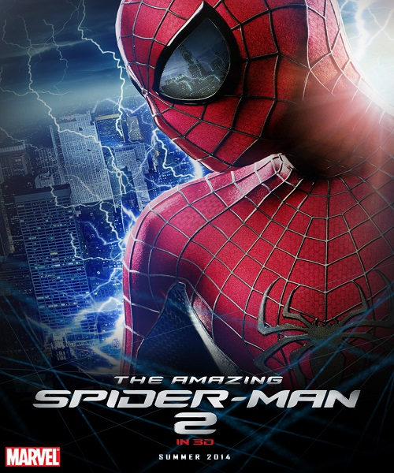
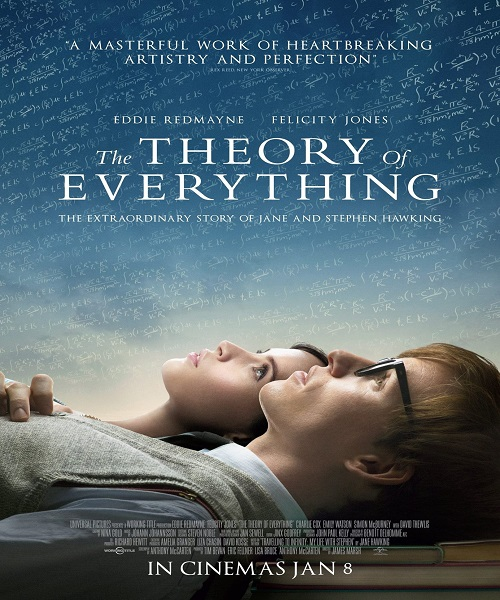
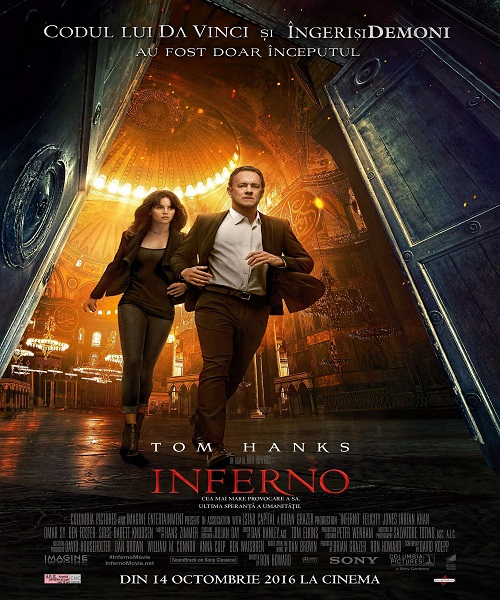

Felicity Jones

Date of birth:
October 17, 1983
Biography:
Felicity Rose Hadley Jones is an English actress. Jones was born in Birmingham, West Midlands, and grew up in Bournville. Her parents met while working at the Wolverhampton Express and Star. Her father was a journalist while her mother was in advertising. They divorced when she was three, and she was brought up with her brother by her mother alone. Despite this, she has said that her family is "extremely close." Her uncle is actor Michael Hadley. After Kings Norton Girls School, Jones attended King Edward VI Handsworth School, to complete A Levels and went on to take a gap year (during which she appeared in the BBC series Servants (2003)). She then read English at Wadham College, Oxford, graduating with a 2:1 in 2006. While studying English, she appeared in student plays, including Attis in which she played the title role, and, in 2005, Shakespeare's "Comedy of Errors" for the OUDS summer tour to Japan, starring alongside Harry Lloyd.
Felicity Jones is an English actress. She started her professional acting career as a child, appearing at age 12 in The Treasure Seekers (1996). She went on to play Ethel Hallow for one series in the television show The Worst Witch and its sequel Weirdsister College. She took time off from acting to attend school during her formative years, and has worked steadily since she graduated from Wadham College, Oxford in 2006. On radio, she is known for playing the long-running role of Emma Grundy in The Archers. In 2008, she appeared in the Donmar Warehouse production of The Chalk Garden.
Since 2006 Jones has appeared in numerous films, including Northanger Abbey (2007), Brideshead Revisited (2008), Chéri (2009), and The Tempest (2010). She stars in Star Wars spin-off Rogue One (2016) as Jyn Erso.
Filmography:
The Amazing Spider-Man 2 (2014)
The Theory of Everything (2014)
Inferno (2016)
Personal Details:
Played the role of Emma Grundy (nee Carter) in the BBC Radio 4 series "The Archers" from 1999-2010.
Made her stage debut as Mia in "That Face", a new play by Polly Stenham - Royal Court Theatre, London (2007).
Played Sosia in the "Falco - The Silver Pigs" based on the novel by Lindsey Davis - BBC Radio 4 (2004).
Played Fanny in "Mansfield Park", adapted from the novel by Jane Austen - BBC Radio 4 (2003).
Played Laurel in "The Chalk Garden" by Enid Bagnold - Donmar Warehouse, London (2008).
(2012) print ads for Dolce & Gabbana's Khol Collection for Eyes and Nails.